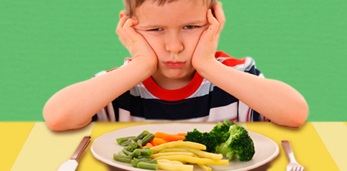

L’obésité est en constante augmentation notamment chez l’enfant où elle touche 3,5% des enfants en France (18% sont en surpoids) ; les enfants et adolescents ont une alimentation souvent très déséquilibrée car trop riche en sucres, graisses et trop pauvre en fruits et légumes.
Il est très important de leur inculquer le plaisir de manger varié, équilibré dès le plus jeune âge car les habitudes alimentaires se prennent très jeune.
Si l’on veut pour des raisons de surpoids modifier l’alimentation de l’enfant ou de l’adolescent, la collaboration de la famille est primordiale.
En effet, il doit se sentir soutenu et non mis à l’écart. Il doit pouvoir comprendre que l’alimentation qu’il avait au départ n’était pas « normale » et non l’inverse. La difficulté la plus souvent rencontrée réside dans la diversification des légumes. Les parents doivent recourir à beaucoup d’imagination quant à leurs préparations (flans, gratins…) afin qu’ils finissent par les apprécier.
À chaque consultation, l’enfant ou l’adolescent me rapporte un carnet alimentaire sur lequel il note chaque jour ses repas; ainsi nous pouvons corriger ensemble les éventuelles erreurs qui l’empêchent d’atteindre son objectif. Plus la prise en charge est tôt, plus vite le problème sera résolu et moins grand sera le risque de rechute à l’âge adulte.